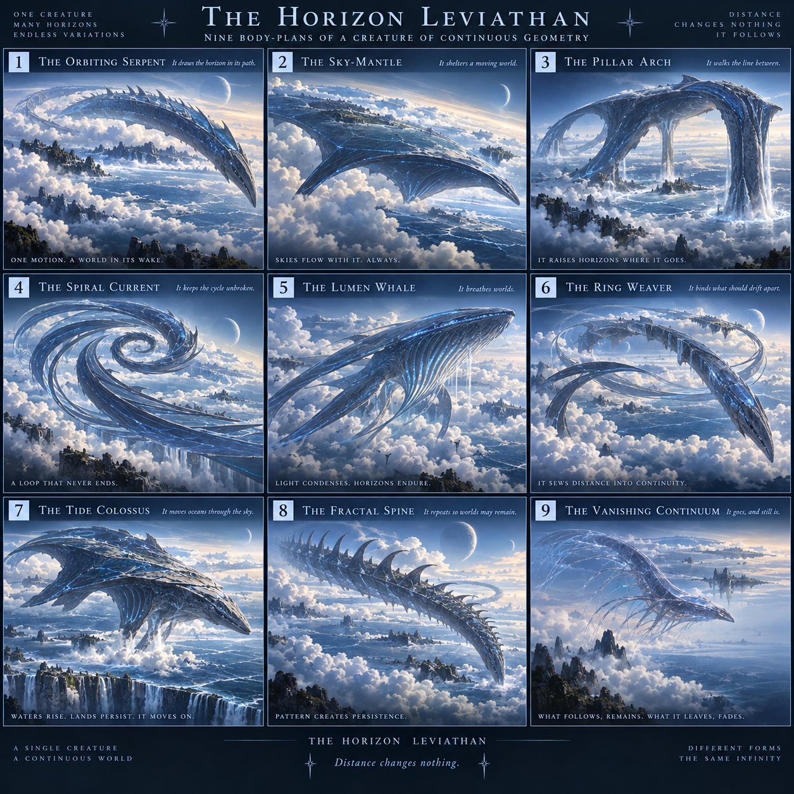

SELECTED REFERENCE
Horizon Leviathan — #8 Fractal Spine
The image numbered 8 on the SECOND 3×3 Horizon sheet is the accepted native-body visual. “Vanishing Continuum” is a retained idea, not the final chosen image.
Open original exact image